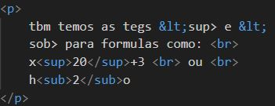

formatracoes adicionais
marca texto teg :<mark>
podemos criar um texto marcado usando a teg mark
A tag <mark> é utilizada para destacar trechos de texto que possuem relevância especial para o usuário. Por exemplo, em resultados de pesquisa na web, trechos que correspondam ao termo buscado podem ser marcados com <mark>. Outros usos comuns incluem destacar termos técnicos em um texto, citações importantes em um bloco de citação
Textos grandes e pequeno
Estamos criando um texto grande e um texto pequeno neste parágrafo

a teg <big> esta em vermelho pos ela e nao comforme apartir do html5 (pois seu fomato nao tinha
peso semantico so formato)
ja a teg <small> segue comforme com peso semantico:
Informações adicionais: Para fornecer detalhes complementares a um texto principal, como
legendas de imagens ou notas de rodapé.
Comentários: Para adicionar comentários ou observações sobre o conteúdo principal.
Acessibilidade: A tag small pode ser interpretada por leitores de tela, facilitando o acesso ao
conteúdo por pessoas com deficiência visual.
Texto deletado ou incerido
Podemos marcar um texto como excluido para indicar q ele deve ser lido , mas nao
comsiderado
podemos marcar um texo como incerido para dar uma ênfase e indicar que ele foi adicionado.
code:

formulas
tbm temos as tegs <sup> e <sob> para formulas como:
x20+3
ou
h2o
code:
